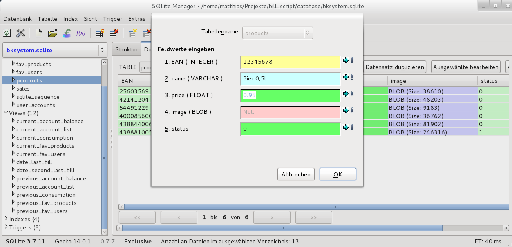
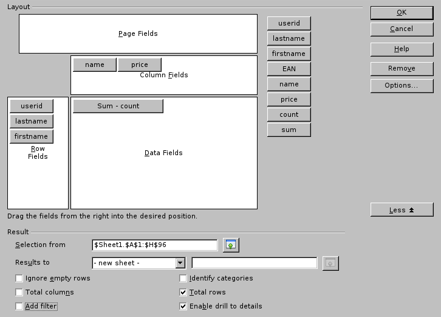
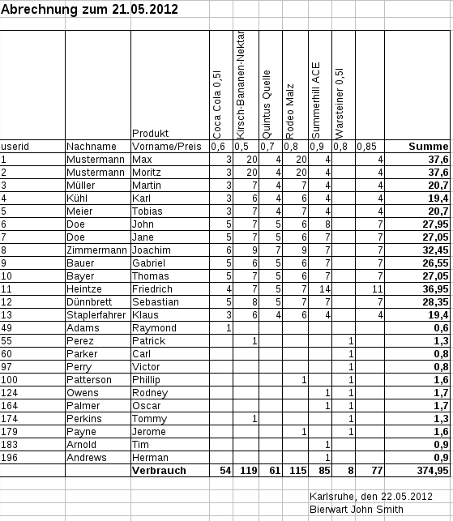

In diesem Dokument sind alle administrativen Vorgänge beschrieben, die zur Pflege und Manipulation der Datenbasis nötig sind. Dieses sind hauptsächlich Benutzer- und Produktverwaltung, sowie Abrechnung.
Alle Daten sind in einer Datenbank (Typ: SQLite) in Tabellen gespeichert. Die Inhalte der Tabellen lassen sich anzeigen und bearbeiten. Dabei können einzelne Felder oder ganze Zeilen bearbeitet, eingefügt oder gelöscht werden. Über SQL-Abfragen können auch Tabellen kombiniert werden. Vorgefertigte Abfragen heißen Views. Diese enthalten keine eigenen Daten, sondern werden immern direkt aus den Tabellen berechnet. Die Konzepte in Übersicht:
Am besten lassen mit die nachfolgenden Aufgaben mit SQLite Manager (Firefox Extension) erledigen. Hiermit lassen sich einfach die Tabellen bearbeiten, exportieren und Bilder einfügen (Produkte, s.u.), sowie Abfragen stellen und Views ansehen.
Nach der Installation findet sich der SQLiteManager in Firefox im Menü Extras. Nach dem Start Datenbank → Mit Datenbank verbinden und die entsprechende Datei suchen (bksystem.sqlite) und öffnen. Uns interessieren die Tabellen user_accounts, products, bill_dates, sales, current_bill und current_consumption. Entsprechende Tabelle auswählen und Reiter/Tab Durchsuchen auswählen. Jetzt sieht man die Datensätze, die sich anlegen, bearbeiten und löschen lassen.
Warnung: Bestätigte Änderungen lassen sich nicht direkt rückgängig machen (STRG-Z, UNDO, Rückgängig), sondern nur durch neu hinzufügen, löschen etc..
Die Schritte werden für den SQLite Manager beschrieben, können aber auch mit jedem anderen Programm zur Manipulation von sqlite-Datenbanken bewerkstelligt werden. Inhalte von Tabellen können im Tab Durchsuchen angesehen und bearbetet werden. Der SQLiteManager bietet auch hier ein Feld (Tab SQL ausführen) an, in den der Code eingefügt und ausgeführt werden kann. Für einige Aufgabenstellungen wird fertiger Code bereitgestellt, bei dem evtl. Parameter eingfügt (z.B. "Max Mustermann" durch Werte ersetzen) werden müssen, und der dann nur ausgeführt werden muss.
|  |
Zum Layout von Rechnungen, drucken, erzeugen von .pdf wird ein Programm zur Tabellenkalkulation benötigt. Beispiele sind Microsoft Excel, Open Office Calc und Libre Office Calc. Alle Schritte werden für Libre Office Calc beschrieben. Die Vorgehensweise mit anderen Programmen sollte sehr ähnlich sein.
Die Benutzerkonten werden in der Tabelle user_accounts gespeichert.
Zum Anlegen eines neuen Benutzers Tabelle Durchsuchen und Datensatz hinzufügen. Es müssen nur Nachname und Vorname angegeben werden, alle anderen Felder werden automatisch mit gültigen Werten belegt.
Es dürfen natürlich auch Benutzerkonten wie z.B. chorleiter, Grillfest, Barkauf, Veranstaltung 24.12.2013 etc. angelegt werden.
Benutzer dürfen auch wieder gelöscht werden. Gibt es nicht abgerechnete Verkäufe des Benutzers, wird mit Fehlermeldung abgebrochen. Sonst werden alle zugehörigen Verkäufe dann aus der DB (Tab. sales) gelöscht.
Benutzeraccounts lassen sich sperren. Dazu einfach den entsprechenden Datensatz auswählen und das Statusfeld bearbeiten. Die Bedeutung des Statusfelds ist: 1 = Benutzer Account gesperrt, 0 nicht gesperrt. 0 ist Standartwert.
Alle Kontostände lassen sich in dem View current_account_balance ansehen.
Personifizierte (komplette oder akkumulierte) Einkaufslisten lassen sich nur über SQL-Abfragen erstellen. Der SQLiteManager bietet auch hier ein Feld (Tab SQL ausführen) an, in den der Code eingefügt und ausgeführt werden kann. Viele Abfragen sind möglich, folgende sind vorgefertigt für Copy + Paste. Die Namensplatzhalter müssen nur durch den gewünschten Namen ersetzt werden:
Einkaufshistorie Einkaufsmengen
Ein Export der Ergebnistabellen dieser Abfragen ist möglich (Aktion → Ergebnis in CSV Datei speichern), dann mit Tabellenkalkulation öffnen) oder als CSV anzeigen lassen und direkt kopieren.
Die Produkte werden in der Tabelle products gespeichert.
Zum hinzufügen eines Produktes müssen EAN, Name, Preis (WICHTIG: mit Punkt, also 1.2) angegeben werden. Optional kann ein Bild hinzugefügt werden
EAN ist die Eurpoean Article Number, welche auf jedem Produkt unter dem Stichcode zu finden ist. Es wird empfohlen diese Nummer zu verwenden. Jede andere eindeutige Nummer ist auch OK, so können eigene Produkte definiert werden, wie z.B. Bier 0,5l etc..
Der Preis ist in Euro anzugeben. Dabei ist zu beachten, dass ein Punkt verwendet wird (z.B. 1.25). Die Preise können jederzeit geändert werden. Damit die Preisänderungen wirksam werden, muss das Program bksystem neu gestartet werden. Verkaufte Produkte werden von der Preisänderung nicht erfasst. In der Abrechnung erscheint das Produkt dann zweimal.
Das Bild des Produktes ist optional. Beliebte Produkte werden extra in einer Liste mit Bild angezeigt. Akzeptierte Formate: png, jpeg, jpg, svg?. Am besten sind jp(e)gs. Die Dateien sollten aller höchstens 500 KB groß sein, 100 KB reicht auch. Google images hilft hier schnell weiter. Im SQLiteManager findet sich im bearbeiten/anlegen Formular ein Durchsuchen-Button, mit dem ein Bild schnell in die Datenbank importiert ist.
Produkte können aus der Tabelle gelöscht werden. Sind aktuell Produkte noch nicht abgerechnet, wird abgebrochen. Alle zugehörigen Verkäufe werden sonst aus der DB (Tab. sales) gelöscht. Alternativ auf nicht anzeigen setzen (Status = 1).
Um nicht jedes ausverkaufte Produkt löschen zu müssen kann es verborgen werden. Der Status sagt aus, ob ein Produkt im Programm angezeigt werden soll (0) oder nicht (1). Die Spalte status im Produkt bearbeiten.
Die Tabelle sales wird durch das Programm geschrieben und enthält EAN, UserID, Preis und Zeitstempel des Verkaufs.
Hier können Verkäufe rückgängig gemacht werden (falls noch nicht abgerechnet), indem die entsprechende Zelle price auf 0 gesetzt wird. Es tauchen die stornierten Verkäufe auch auf den Abrechnungs- und Verbrauchslisten auf.
Werden die Verkaufsdaten nicht mehr benötigt (z.B. nach einem Kassenabschluss), können die entsprechenden Datensätze gelöscht werden. Manuell oder automatisch (löscht alle abgerechneten Daten). Bitte nur abgerechnete Datensätze löschen und dann Abrechnungen nicht rückgängig machen!
Die Tabelle bill_dates enthält die Abrechnungszeitpunkte. Wird die automatisch Abrechnung benutzt, gibt es zu jedem Datum zugehörige Dateien (mit Datum im Namen).
Es gib 6 Views, die den Verbrauch consumption, Kontostände account_balance und die Kontoauszüge account_list anzeigen. Dabei bezieht sich das Präfix previous auf bereits abgerechnete Posten (aktuelle Rechnung), current auf den laufenden Konsum (noch nicht abgerechnete Posten). Wird eine Abrechnung zum jetzigen Zeitpunkt erstellt, werden diese current Views also keine Daten mehr enthalten. Alles was dort zu finden war, wird nun in den previous angezeigt.
Der View previous_account_list enthält die gesamte aktuelle Rechnung, inkl. userid, vollständigem Namen, Produktinfos, Anzahl und Gesamtsumme jeden Produktes. Aus dieser Liste läßt sich die detailierte Rechnung erstellen (Pivot Tabelle erstellen, manuelle Abrechnung).
Der View previous_consumption enthält die aktuelle gesamte Verbrauchsaufstellung, inkl. EAN, Produktnamen und Anzahl.
Der View previous_account_balance enhält die gesamt Summen für alle Benutzer.
Nach dem Erstellen neuer Rechungen ändern sich die Inhalte der Views. Daher sollten die Tabellen direkt gespeichert werden. Ältere Rechnungen über SQL-Abfragen
Die zur Zeit laufenden Posten lassen sich in den Views current_account_balance(Kontostände),current_account_list (Kontoauszüge) und current_consumption (Verbrauch) anschauen.
Folgende Schritte führen zur Abrechnung.
Bei der automatischen Abrechnung werden einige Schritte durch Shell-Skripte erledigt, die sonst manuell erledigt werden müssen. Hilfsmittel ist hier Crontab.
Nicht automatisiert sind dafür Import in die Tabellenkalkulation,Layout, pdf/Druck, evtl. Pivot Tabelle, falls Abrechnung.csv sich nicht importieren lässt.
Export der formatierten Konsumliste → Abrechnung_datum.html
Zur Abrechnung muss nur ein Datum in die Tabelle bill_dates eingefügt werden. Bei der Erstellung eines neuen Eintrages wird bill_id automatisch gesetzt. Es ist nur der Zeitstempel anzugeben, zu welchem Zeitpunkt eine Abrechnung angefertigt werden soll. Der Zeitstempel muss im Format JJJJ-MM-TT SS:MM:SS angegeben werden (z.B. 2012-01-16 20:35:59). Der angegebene Zeitpunkt muss neuer als der letzte Eintrag sein, sowie darf nicht in der Zukunft liegen. Abrechnungen zu einem vergangen Zeitpunkt sind aber durchaus möglich.
Über SQL-Abfragen lassen sich auch für heute und jetzt ein gültiges Format erzeugen oder direkt einfügen.
Ein Eintrag in diese Tabelle reicht aus, damit sämtliche Views jetzt die neuen Rechnungen anzeigen. Die gesamte Abrechnung, Kontostände bzw. Verbrauch befinden sich nun in den Tabellen previous_account_list, previvous_account_balance und current_consumption. Diese Tabellen können nun als .csv exportiert werden (lassen sich mit Excel öffnen).
Abrechnungen lassen sich rückgängig machen, indem die letzte Zeile der Tabelle bill_dates gelöscht wird. Es werden auch hier alle anderen Tabellen erneuert. WARNUNG: Wurden inzwischen Benutzer oder Produkte gelöscht, werden sie in erneuter Abrechnung nicht mehr auftauchen. Es dürfen also Benutzer oder Produkte nur gelöscht werden, wenn die Abrechnung nicht mehr verändert wird.
SQLiteManager bietet eine Export Funktion an. Die gewünschte Tabelle/View (z.B. previous_account_list, previous_consumption) auswählen und im Menü Tabelle → Tabelle exportieren oder im Tab Struktur den Button Exportieren den Assistenten öffnen. Im Export Assistenten CSV auswählen. Die voreingestellten Optionen sollten ausreichen, damit die erstellte Datei von MS Excel, Open/Libre Office Calc o.ä. gelesen wird. Die Tabellen können auch direkt markiert und mit Drag'n'Drop od Copy+Paste übernommen werden.
Alle generierten/exportierten .csv Dateien lassen sich direkt in MS Excel, Open/Libre Office Calc öffnen. Es erscheint ein Import Dialog mit Vorschau. WICHTIG: Als Codierung muss utf-8 gewählt werden, damit Umlaute richtig dargestellt werden. Als Sprache sollte English(USA) eingestellt werden, damit die Dezimalbrüche der Summen und Preise richtig erkannt werden. Das Trennzeichen ist das Komma.
Aus der Liste (pervious_account_list (exportiert) bzw. Konsumliste.csv (generiert) müssen sog. Pivot-Tabellen erstellt werden: in Office findet sich diese Funktion im Menü Daten→DatenPilot→Create (Datensätze vorher markieren). UID, Nach und Vorname gehöhren in die Zeilen(row), Productname, und Preis in die Spalten(column), sowie der count (wichtig) und evtl. sum (s.u.) in das Datenfeld. Hat man die Summe (sum) ins Datenfeld eingefügt, ist man nun fertig.
Besser (platzsparender) ist jedoch die Variante ohne sum im Datenfeld (s.u.), in der man die Rechte Spalte selbst berechnet. Dazu =SUMMENPRODUKT( einfügen und die Zeile für den Preis und den Benutzer markieren. Bei den Preisfeldern noch ein $ zwischen Buchstabe und Zahl einfügen (sieht ungefähr so aus =SUMMENPRODUKT(D$4:K$4;D5:K5). Jetzt kann das Feld markiert werden und am rechten Rand das Viereck nach unten gezogen werden (bis einschl. der Summenzeile, kopiert das Feld für alle Benutzer). Man könnte auch die Summen aus der Kontostand.csv kopieren.
|  |
Jetzt muss noch ein wenig formatiert werden. Es empfielt sich die Produktnamen um 90 grad zu drehen und dann zugehörige Spalten automatisch in der Breite anzupassen um Platz zu sparen. Die Tabelle sollte in der Breite auf ein Blatt passen, evtl. Blatt quer nehmen. Sollten Formatierungen in der automaisch generierten Pivot Tabelle nicht möglich sein: Ausschneiden und in ein neues Blatt einfügen. Dann noch Rahmen und Gitter einfügen, sheet/Blatt umbennenen, Datum + Text einfügen, etc..
|  |
Es gibt auch ein backup script, welches bei jeder automatische Abrechnung auch ausgeführt wird.
Die Export Funktion lässt sich auch zum Backup von Tabellen nutzten. Die gewünschte Tabelle auswählen und im Menü Tabelle → Tabelle exportieren oder im Tab Struktur den Button Exportieren den Assistenten öffnen. Im Export Assistenten SQL auswählen. Die voreingestellten Optionen verwenden. Der Inhalt dieser Textdatei kann über SQL ausführen, Copy+Paste wieder eingelesen werden. Dies sollte initial mit den Accounts und vor Übergabe mit den Produkten geschehen.
Zum Wiederherstellen gibt es auch ein script, welches mit ./bksystem -r ausgeführt werden kann, oder es müssen die die Dateien bkystem_scheme.sql, user_accounts.sql, products.sql, sales.sql, billdates.sql in der Reihenfolge in einer leeren Datenbank (Datei→neue Datenbank) ausgeführtwerden. Dazu den Text der Dateien einfach ins Abfragefeld kopieren und ausführen. Dabei kann es zu Fehlermeldungen führen, wie "Tabelle/View existiert bereits": für jede wiederhergestellte Tabelle, da das Tabellen anlegen im Schema und der Tabelle selbst ausgeführt wird. oder "ID muss eindeutig sein" für die Tabelle bill_dates, da 0000-01-01 00:00:00 2x eigefügt wird. Diese Fehlermeldungen können ignoriert werden.